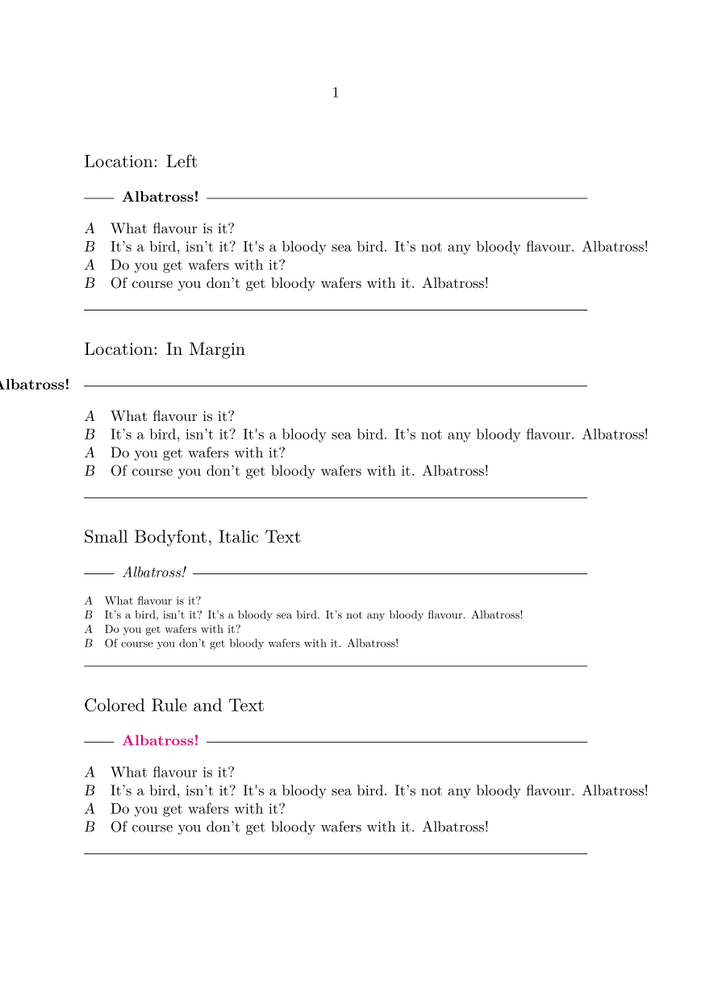

Syntax (autogenerated)
| \setuptextrules[...=...,...] | |
| before | command |
| after | command |
| inbetween | command |
| rulethickness | dimension |
| location | left inmargin |
| style | style command |
| color | color |
| rulecolor | color |
| width | dimension |
| height | dimension |
| distance | dimension |
| depthcorrection | on off |
| bodyfont | see \setupbodyfont |
Syntax
| \setuptextrules[...,...=...,...] | |
| location | left inmargin |
| before | command |
| after | command |
| inbetween | command |
| width | dimension |
| distance | dimension |
| bodyfont | 5pt ... 12pt small big |
| color | name |
| style | normal bold slanted boldslanted type cap small... command |
| rulecolor | name |
Description
From the source:
%D Putting rules before and after a paragraph is very space %D sensitive, but the next command handles that quite well. It %D comes in two disguises:
Those two ‘disguises’ are \textrule and the \starttextrule environment. The command \setuptextrules is dedicated to controlling the behaviour of these.
Example
\enableregime[utf] \setupcolors[state=start] \setupcolor[hex] \definecolor[telekommagenta][h=E20074] % RAL 4010 \unexpanded\def\example#1{% \subject{#1} \starttextrule{Albatross!} \starttabulate[|l|l|] \NC{\em A} \NC What flavour is it? \NC\NR \NC{\em B} \NC It’s a bird, isn’t it? It's a bloody sea bird. It’s not any bloody flavour. Albatross! \NC\NR \NC {\em A} \NC Do you get wafers with it? \NC\NR \NC {\em B} \NC Of course you don’t get bloody wafers with it. Albatross!\NC\NR \stoptabulate \stoptextrule } \setupbodyfont[9pt] \starttext {\setuptextrules[location=left] \example{Location: Left}} {\setuptextrules[location=inmargin] \example{Location: In Margin}} {\setuptextrules[bodyfont=small,style=italic] \example{Small Bodyfont, Italic Text}} {\setuptextrules[color=telekommagenta,rulecolor=red:2] \example{Colored Rule and Text}} {\setuptextrules[distance=5em] \example{Wide Distance Between Text And Rule}} \stoptext
- 
See also
Help from ConTeXt-Mailinglist/Forum
All issues with: